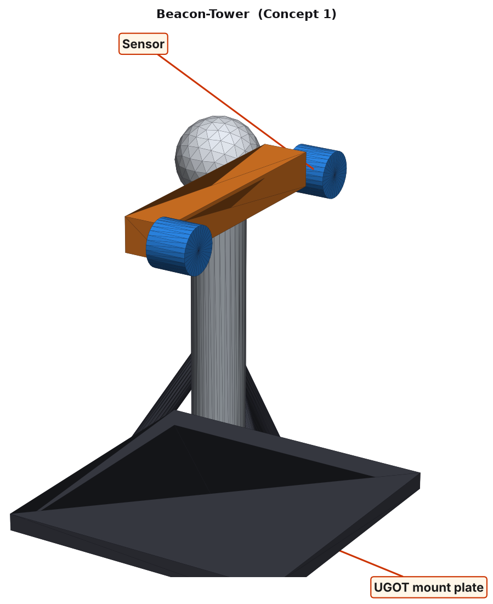
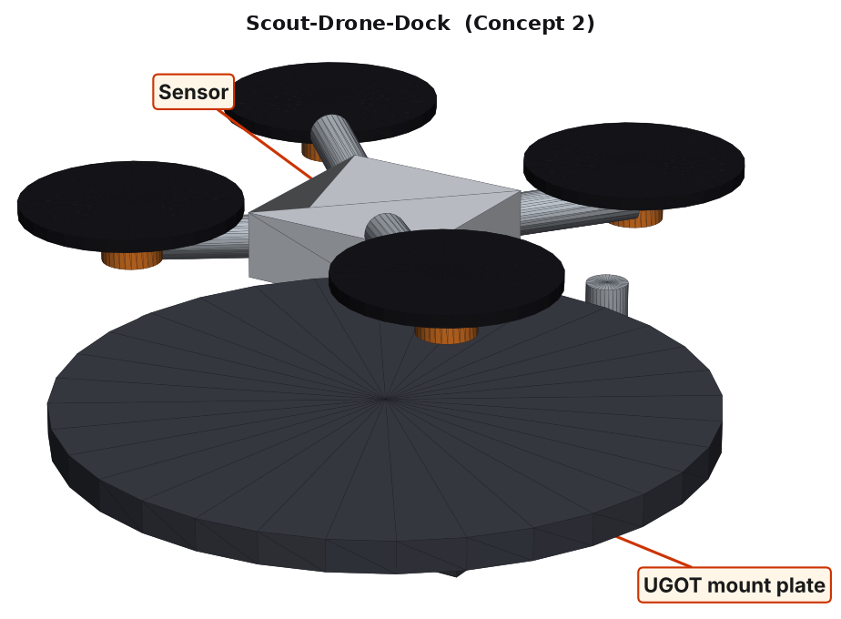
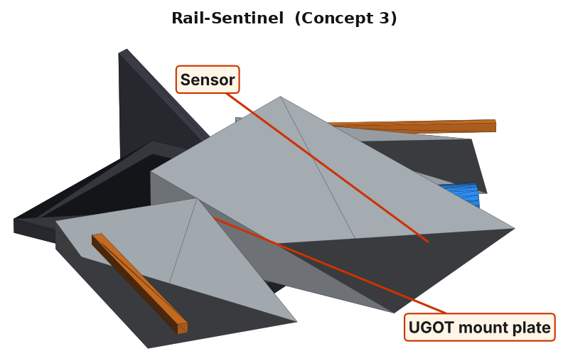
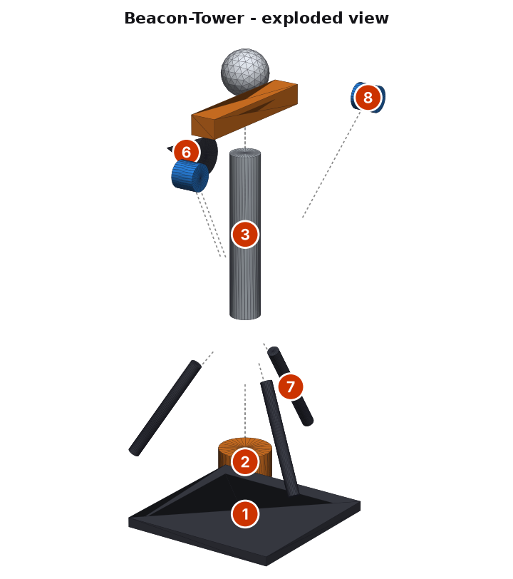
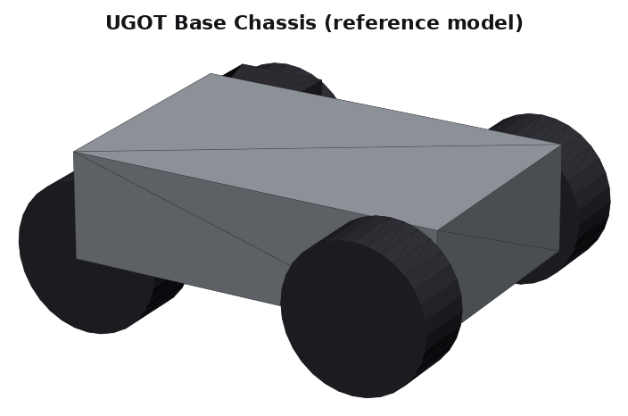

Design Brief
Context that frames the whole Criterion B response for this lesson.
Problem context (real world & UAE link): A robot patrolling a warehouse, a campus corridor or a solar farm at night follows a route, watches in every direction and avoids obstacles on its own.
Design task: Design a physical, 3D-printable / laser-cut module that integrates the UGOT Cameras + TOF distance sensors + motors and bolts to the UGOT chassis. It must be buildable by a Grade 10 student in the Product Design lab (MDF, wood, 3D printing).
User: a 14–16 year-old MYP student assembling, testing and demonstrating the robot in class and at the AIA STEM showcase.
B1 · Design Specification
Each success criterion is described and justified using ACCESSFM. Rows marked are measurable. Size, mass and cost limits are calculated from the chosen 3D model.
| Specification | # | Success criterion | Justification |
|---|---|---|---|
| Aesthetics | 1.1 | Colour scheme of slate grey with a cyan scanning light. | A high-visibility, consistent palette makes the tool instantly recognisable and looks professional at the AIA STEM showcase. |
| 1.2 | Smooth, rounded external edges (fillet ≥ 2 mm) with no visible fasteners on the outer shell. | Rounded edges read as safe to handle and avoid snagging. | |
| Cost | 2.1 | Material + fabrication cost per unit ≤ AED 60. | Based on PETG filament at about AED 0.12/g, MDF offcuts and AED 14 of hardware; keeps a class set affordable. |
| 2.2 | Re-uses UGOT kit servos, sensors and fasteners; no proprietary parts. | Avoids extra purchase orders and keeps the design compatible with kits the school already owns. | |
| Customer | 3.1 | Bolts to the UGOT chassis with M3 fasteners through the mount plate using only the lab toolkit (check hole spacing against your own kit). | Every group's UGOT chassis must be able to accept the part. |
| 3.2 | Assembles in one lesson (≤ 70 min) by a pair of Grade 10 students. | Matches the AIA single-period lesson structure for this unit. | |
| Environment | 4.1 | At least 80% of the structural material is recyclable PETG or reclaimed MDF offcuts. | PETG is recyclable and MDF offcuts come from the lab scrap bin (6 R's: Reduce, Reuse). |
| 4.2 | Printed + cut mass ≤ 100 g. | Lower mass means less filament, less print energy and less load on the UGOT motors. | |
| Size | 5.1 | Overall envelope ≤ 110 × 110 × 150 mm (L × W × H). | Keeps the module compact enough to mount on the UGOT chassis without hitting its wheels or the floor. |
| 5.2 | Every printed part fits on a 200 × 200 mm print bed; every cut part fits a 300 × 300 mm laser bed. | Matches the lab machinery available to students. | |
| Safety | 6.1 | Moving parts are shielded and the robot stops if an obstacle is closer than 100 mm. | Reduces the chance of injury to the student building, testing and demonstrating it. |
| 6.2 | No exposed sharp corners: all edges filleted or sanded; sensor lens recessed about 2 mm to avoid impact cracks. | Standard safe-handling requirement for a student-built robotic part. | |
| Function | 7.1 | Completes a 10 m patrol loop and avoids obstacles placed within 300 mm. | Directly measures whether the design solves the problem in the scenario above. |
| 7.2 | Camera sees 360° (or two overlapping 180° views) around the robot. | Sensor range figures are design targets; the housing must never block or shorten them. | |
| 7.3 | The sensor's field of view is unobstructed by any part of the housing. | A sensor that is blocked gives wrong data, so the design fails its main job. | |
| 7.4 | Sensors and servos are replaceable with hand tools in under 2 minutes. | Classroom robots are reused across cohorts, so parts will wear and break. | |
| Material | 8.1 | PETG for towers and pods; 3 mm MDF for the mount plate and dock. | PETG is more impact-resistant than PLA and the lab printer is PETG-calibrated. |
| 8.2 | Flat or simple parts use 3 mm laser-cut MDF to save print time. | MDF cutting is faster than printing for flat parts, freeing the printer for complex geometry. |
🧩 Your turn — write your own B1
All: write 2 success criteria (one Aesthetics, one Safety) for your design.
Most: make at least one measurable (a number and a unit).
Some: justify it with a research reference (a spec sheet, a standard or a real product).
B2 · Design Ideas 3 different ideas
Three ideas that differ in mechanism and form, not just looks. Each sketch is an isometric render of the 3D CAD model with the sensor and mount labelled.

Concept 1 — “Beacon-Tower” SELECTED
Two cameras on a servo-driven crossbar atop a mast sweep 360° like a lighthouse, keeping watch from a height.
Envelope 100.0 × 100.0 × 138.0 mm · ≈ 48 g · ≈ AED 25

Concept 2 — “Scout-Drone-Dock”
A small quad-rotor scout lifts off from a dock for aerial views. Visionary, but flying parts raise safety and cost.
Envelope 160.0 × 160.0 × 69.5 mm · ≈ 123 g · ≈ AED 50

Concept 3 — “Rail-Sentinel”
A low, angular body carries three TOF sensors that scan left, centre and right. Cheap and tough, but sees only distance, not pictures.
Envelope 175.0 × 246.5 × 66.0 mm · ≈ 125 g · ≈ AED 36
🧩 Your turn — sketch a 4th idea
All: describe a 4th idea in 2–3 sentences. It must differ by mechanism, not just colour or shape.
Most: say which ACCESSFM criteria it would score best and worst on.
Some: describe it so well that a partner could draw it from your words alone.
B3 · Chosen Design
Each idea is rated 1 (poor) – 5 (excellent) against every ACCESSFM success criterion from B1.
| Category | What is being evaluated | Concept 1 Beacon-Tower | Concept 2 Scout-Drone-Dock | Concept 3 Rail-Sentinel |
|---|---|---|---|---|
| Aesthetics | High-visibility, rounded, safe-looking shell | 5 | 5 | 4 |
| Cost | ≤ AED 60, reuses kit parts | 3 | 1 | 5 |
| Customer | Fits the UGOT mount, builds in one lesson | 4 | 2 | 3 |
| Environment | ≥ 80% recyclable material, light | 4 | 2 | 4 |
| Size | Fits ≤ 110×110×150 mm | 4 | 2 | 4 |
| Safety | No pinch points or sharp edges | 4 | 2 | 4 |
| Function | Meets both measurable function targets | 5 | 4 | 3 |
| Material | PETG + MDF used sensibly | 4 | 3 | 4 |
| Total (/40) | 33 | 21 | 31 | |
🧩 Your turn — rate and justify
All: pick one rating you disagree with, give your own 1–5 and say why.
Most: re-total the scores. Does the chosen design still win?
Some: write a 3-sentence justification in the style above for your three ideas.
B4 · Detailed Plans
Dimensioned CAD output for the chosen design: orthographic (front / top / right side), exploded view, and Bill of Materials.


Bill of Materials (BOM)
| # | Part | Material / source | Approx. size | Qty | Fabrication method |
|---|---|---|---|---|---|
| 1 | Mounting plate | 3mm MDF | 100 x 100 x 6 mm | 1 | Laser-cut |
| 2 | Rotation servo | UGOT kit part | 32 x 32 x 18 mm | 1 | Kit component - reused |
| 3 | Tower mast | PETG | 100 x 18 x 18 mm | 1 | 3D-printed (20% infill) |
| 4 | Light bar | PETG | 84 x 16 x 12 mm | 1 | 3D-printed (20% infill) |
| 5 | Beacon cap | PETG | 28 x 28 x 28 mm | 1 | 3D-printed (20% infill) |
| 6 | Siren horn | PETG | 28 x 24 x 24 mm | 1 | 3D-printed (20% infill) |
| 7 | Guy support | PETG | 69 x 7 x 7 mm | 3 | 3D-printed (20% infill) |
| 8 | Patrol camera | UGOT kit part | 16 x 16 x 14 mm | 2 | Kit component - reused |
| 9 | M3 x 12 bolt & nut sets | Hardware | M3 x 12 mm | 12 | Off-the-shelf |
| 10 | Cable ties & wiring set | Hardware | - | 1 | Off-the-shelf |
Estimated printed + cut mass: ≈ 48 g (limit 100 g). Estimated cost: ≈ AED 25 (limit 60). Overall envelope: 100.0 × 100.0 × 138.0 mm.
🧩 Your turn — dimension your own idea
All: list 3 real dimensions (mm) your design needs.
Most: list at least 5 BOM rows (part, material, qty, method).
Some: describe one feature to add to your exploded view (a wiring channel, a hinge, a snap-fit).
Integration with UGOT
How the chosen module bolts onto the UGOT chassis, plus the humanoid reimagining. All downloadable as STL below.


UGOT Base Chassis
A simplified chassis (body, 4 wheels, camera, controller) so you can test-fit your own design in CAD before printing.

UGOT Guardian Humanoid
The wheeled base keeps its mobility while the top half becomes a torso, head and arms. Your Criterion B design can be reinterpreted the same way.
🧩 Your turn — Humanoid challenge
Give the humanoid a patrol routine. What would it look like walking a route at night, and how would people know it is friendly?
All: describe one change to the humanoid for this lesson.
Most: sketch in words a second humanoid concept with a different silhouette.
Some: justify it against at least 4 ACCESSFM categories.
Downloads & TinkerCAD
STL files for all three ideas, the chosen design and the UGOT references, ready for TinkerCAD or any slicer.
- Go to tinkercad.com and sign in.
- Create a new 3D Design.
- Click Import → choose an
.stlfile → set units to mm → Import. - Measure, recolour, duplicate or merge it with your own shapes, then Export → .STL for the slicer.
Modelling Worksheet — Making the Physical Model
Follow in order. Lab tools: 3D printer (PETG), laser cutter, M3 hex driver, 320-grit sandpaper, hot glue gun.
- Check the CAD: open the chosen-design STL in TinkerCAD or your slicer, set units to millimetres and confirm the envelope is 100.0 × 100.0 × 138.0 mm (limit 110 × 110 × 150 mm).
- Slice the printed parts (Beacon cap, Guy support, Light bar, Siren horn, Tower mast) in Cura/PrusaSlicer: PETG, 0.2 mm layers, 15–20% infill, supports only where an overhang needs them.
- Laser-cut the MDF parts (mount plate) from 3 mm MDF using the footprint on the top orthographic view; add 4 × M3 clearance holes for the UGOT mount.
- De-burr and sand every printed part (320 grit); pay attention to pivot holes and sensor windows so nothing binds or blocks a lens.
- Fit the sensor: Fix both cameras on the crossbar back-to-back, lenses facing outwards, and route cables down the hollow mast so they cannot snag.
- Assemble the mechanism following the numbered exploded view and BOM: fasteners finger-tight first, then check every moving part swings freely.
- Wire and test: connect the kit sensor and servo to the UGOT controller; run a short program to confirm each reading and movement.
- Mount to UGOT: bolt the mount plate to the chassis with the kit's M3 screws (Customer spec 3.1) and confirm the wheels still clear.
- Function-test against specs 7.1 and 7.2: Completes a 10 m patrol loop and avoids obstacles placed within 300 mm. Record results in your portfolio.
- Finish: spray or vinyl-wrap in the colour scheme from specification 1.1, then re-test fit after finishing.
Quiz — Automatic Patrol
Kahoot-style, timed, auto-marked. Your score is saved once you log in above.
🏁 Ready to play?
10 questions · 15 seconds each · lesson content + Criterion B skills.
Reflection prompts
- Which ACCESSFM category was hardest to satisfy with all three of your ideas, and why?
- How did sensor range, reach or print time change once you saw the dimensioned drawings?
- Where might your chosen design still fail Safety in real use, and how would you test for it?